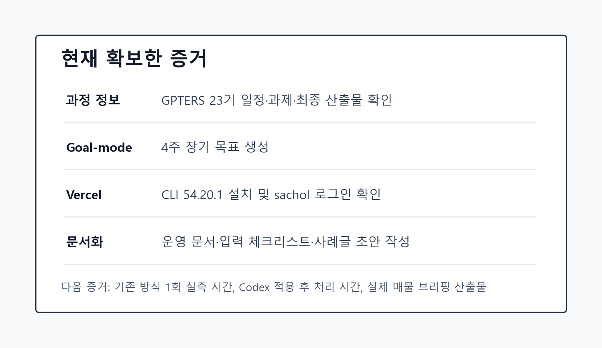

왜 시작했나
공인중개사 신화의 Codex 앱 업무 자동화 실험
01 / 06
반복되는 매물 브리핑 준비를 Codex 앱으로 구조화해, 고객 설명 초안과 내부 검수 체크리스트를 빠르게 만드는 개인용 에이전트 시스템을 실험합니다.
대상 업무
매물 브리핑 초안
사용 도구
Codex 앱
현재 상태
준비 기간
핵심 가설: Codex는 최종 판단자가 아니라, 공인중개사가 검수하기 쉬운 초안과 체크리스트를 만드는 실무 파트너로 쓸 때 가치가 큽니다.
기존 방식
자료는 흩어져 있고, 검수 기준은 머릿속에 있었습니다
02 / 06
수작업 흐름
- 건축물대장, 등기부, 토지이용계획을 각각 확인
- 실거래가와 주변 시세를 별도로 메모
- 고객 설명 문구와 내부 검수 사항을 직접 분리
- 나중에 사례글을 쓰려면 기억에 의존
문제점
- 반복 업무인데 매번 새로 정리
- 수치와 법적 표현을 놓치면 리스크가 큼
- 업무 시간이 정량 기록되지 않음
- 강의 사례로 재현하기 어려움
| 측정 항목 | 현재 상태 | 다음 증거 |
|---|---|---|
| 기존 처리 시간 | 실측 전 | Before 실측표 작성 |
| Codex 적용 시간 | 실측 전 | 샘플 또는 실제 매물로 After 측정 |
Codex로 바꾼 방식
업무를 입력, 처리, 검수, 기록으로 분해했습니다
03 / 06

Goal-mode
4주 목표와 산출물을 계속 이어가기 위한 장기 맥락으로 사용합니다.
작업지시서
매물 브리핑 에이전트가 필수 입력, 출력 형식, 금지 표현을 따르게 합니다.
증거 장부
명령, 산출물, 시간 측정, 배운 점을 사례글 재료로 누적합니다.
만든 시스템
매물 브리핑 에이전트의 최소 구조
04 / 06
입력
주소, 거래조건, 공부서류, 시세, 현장 메모
필수 입력이 없으면 먼저 질문하도록 지시서에 정의
준비됨
처리
핵심 수치 추출, 누락·충돌 표시, 고객 문구 초안 작성
확인된 사실, 추정, 자료 없음, 추가 확인 필요로 분리
준비됨
검수
원문 공부서류, 권리관계, 광고 표현 최종 확인
AI 결과를 그대로 고객에게 전달하지 않음
실측 예정
기록
Before/After 시간, 시행착오, 배운 점 누적
GPTERS 사례글과 발표 자료로 재사용
구조 완료
금지 표현: 수익 보장, 권리관계 문제 없음, 법적 검토 완료, 건축물대장 API만으로 확정
Before / After
속도보다 중요한 것은 검수 가능한 단축입니다
05 / 06
| 항목 | 기존 방식 | Codex 적용 방식 | 상태 |
|---|---|---|---|
| 자료 확인 | 서류별 수동 확인 | 입력자료 요약과 누락 표시 | 실측 예정 |
| 초안 작성 | 고객 문구 직접 작성 | 고객 설명 초안 생성 후 수정 | 실측 예정 |
| 검수 | 경험 기반 체크 | 내부 체크리스트 기준 대조 | 구조 준비 |
| 사례글 기록 | 나중에 기억으로 작성 | 일일 로그와 증거 장부에 즉시 기록 | 진행 중 |
다음 증거: 실제 업무 1건의 기존 방식 처리 시간과 Codex 적용 후 처리 시간을 같은 기준으로 측정합니다.
배운 점과 다음 계획
사람은 판단과 검수, Codex는 정리와 초안
06 / 06
현재까지 배운 점
- 자동화는 업무를 통째로 맡기는 것이 아니라 검수 가능한 단위로 나누는 일입니다.
- 부동산 업무에서는 고객 설명 문구와 내부 검수 메모를 반드시 분리해야 합니다.
- 사례글은 마지막에 쓰는 글이 아니라 매일 남긴 증거를 조립하는 결과물입니다.
다음 계획
- 반복 업무 5개를 실제 업무 기준으로 확정
- 기존 방식 1회 실측
- Codex 적용 방식 1회 실측
- Week 2에서 Skill, Plugin, MCP 조합 실험

작성: 신화 · 기준일: 2026-07-04 · 실측 수치는 Week 1 이후 업데이트 예정